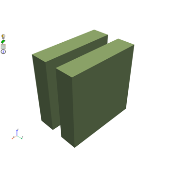

download_solder_ball_target_fmd#
- ansys.meshing.prime.examples.download_solder_ball_target_fmd(destination=None, force=False)#
Download a FMD file for the solder ball example.
- Parameters:
- Returns:
- :
strLocal path to the downloaded file.
- Return type:
Examples
>>> import ansys.meshing.prime as prime >>> import ansys.meshing.prime.examples as prime_examples >>> with prime.launch_prime() as session: >>> model = session.model >>> solder_ball_target = prime_examples.download_solder_ball_target_fmd() >>> with prime.FileIO(model) as io: >>> _ = io.import_cad(solder_ball_target, params=prime.ImportCADParams(model)) >>> print(model)
Examples using download_solder_ball_target_fmd#

Mesh a set of solder balls (beta)
Mesh a set of solder balls (beta)